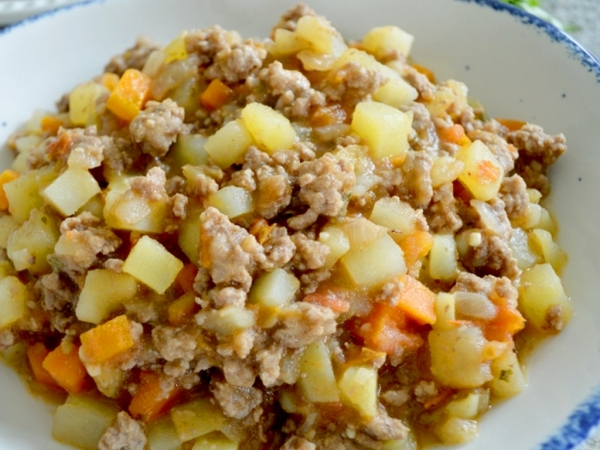

Detalles de la receta
Picadillo de papa
Añadir a favoritos
Ingredientes
1 kg de papas (peladas y picadas en cuadritos pequeños)
1/2 kg a 400 g de carne molida (o una taza de chorizo desmenuzado / carne desmechada)
1/2 taza de cebolla picada fina
1/2 taza de chile dulce (pimiento) picado fino
2 a 3 dientes de ajo triturados o picados
1/2 taza de zanahoria picada en cuadros muy pequeños (opcional)
2 cucharadas de aceite o mantequilla/margarina
1 cucharadita de achiote para dar color
Culantro de castilla fresco picado finamente

Comentarios
Julio Q.
Muy fácil de preparar!
Logan H.
Me encanta, solo cambia la proteina cuando quieras!